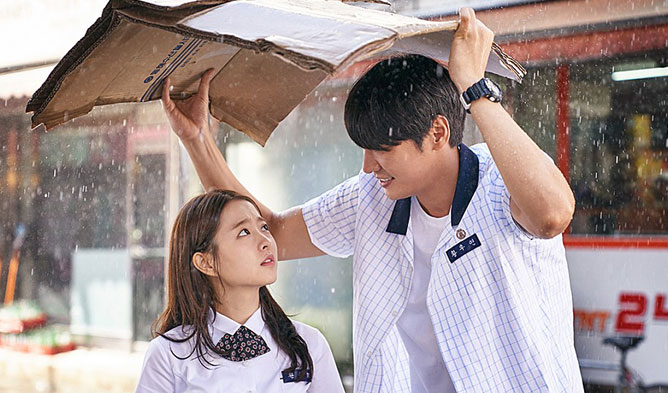
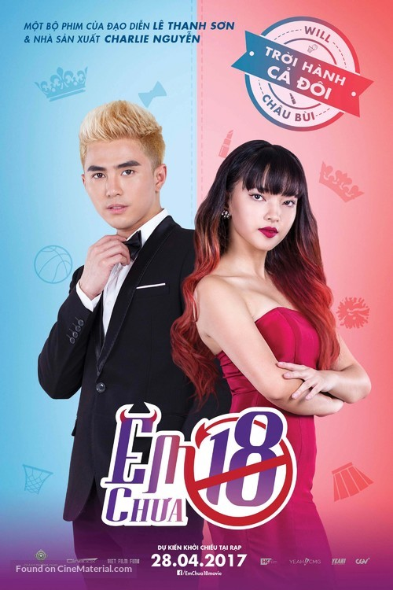
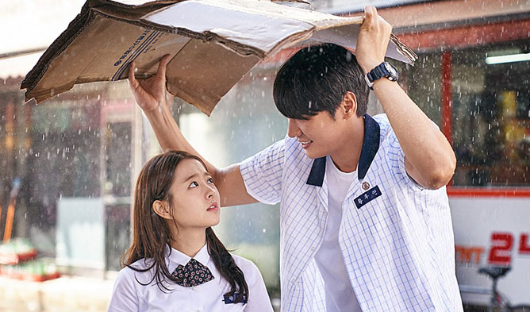
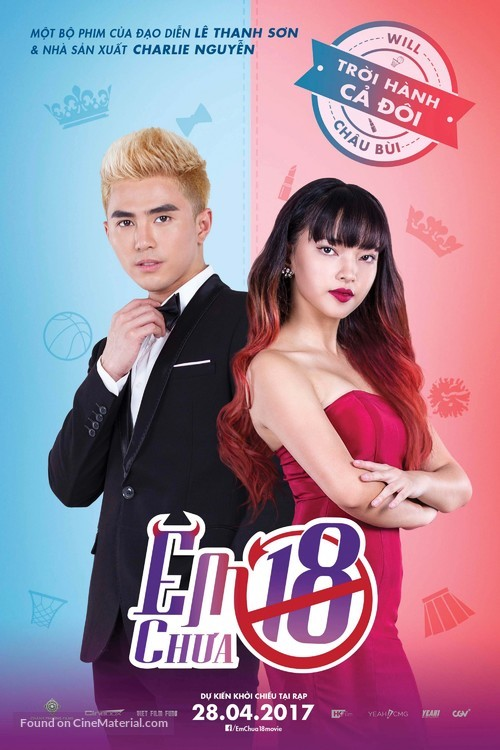

Phim Kẻ Giết Thuê Lẻ Đề Cử Thể loại Phim Lẻ Hay Phimzhay Thuyết minh và vietsub bộ phim (ke giet thue), lồng tiếng hay, bản đẹp Full HD. Bộ phim Truyền hình (Ke Giet Thue) hiện hữu những diễn viên Lẻ Đề Cử xuất sắc nhất hiện nay. Kazuki Kitamura, Oka Antara, Rin Takanash
Sword Art Online là một anime thể loại hành động sci-fi năm 2012 dựa trên light novel được viết bởi Reki Kawahara và minh họa bởi Abec. Bắt đầu vào năm 2022, một Virtual Reality Massively Multiplayer Online Role-Playing Game (VRMMORPG) tên gọi Sword Art Online (SAO) được ra mắt. Bên trong game, người chơi điều khiển avatar của họ giống hệt như cách họ điều khiển cơ thể thực nhờ sử dụng Nerve Gear, một chiếc Mũ VR có thể kích thích năm giác quan.…
Trò Chơi Ma Quỷ kể về những sinh viên trường nữ, bao gồm Mitsuko (Reina Triendl), Keiko (Mariko Shinoda) và Izumi (Erina Mano), trở thành mục tiêu của những bóng ma với sự xuất hiện khác nhau bao gồm cả một chú rể với khuôn mặt của một con lợn và giáo viên nữ với một khẩu súng máy.